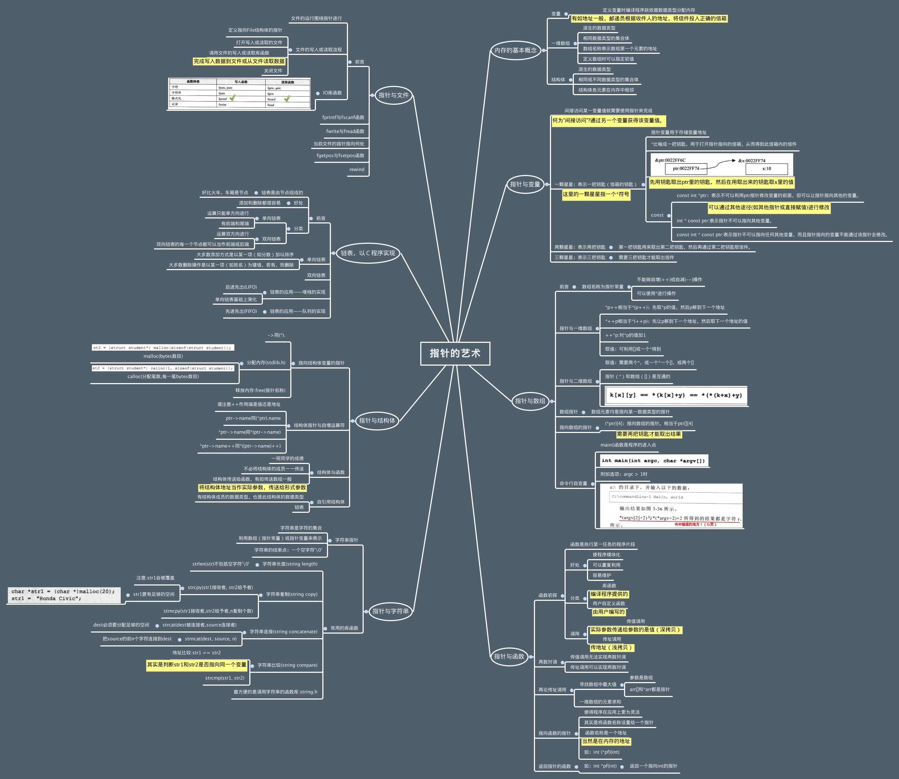

C语言指针小结
指针变量的定义
- 格式：变量类型
*指针变量名; - 举例：
int *p;char *p2; - 注意：定义变量时的
*仅仅是指针变量的象征
利用指针变量简单修改其他变量的值
指向某个变量
int a;
int *p;
p = &a;
或者
int *p = &a;
修改所指向变量的值
*p = 10;
在函数内部修改外面变量的值
int a = 10;
change(&a);
void change(int *n) {
*n = 20;
}
指针与数组
将数组当做函数参数传入时，会自动转为指针
指针与字符串
定义字符串的2种方式
利用数组
char name[] = "foobar";
特点：字符串里面的字符是可以修改的
使用场合：字符串的内容需要经常修改
利用指针
char *name = "foobar";
特点：字符串其实是一个常量字符串，里面的字符是不能修改
使用场合：字符串的内容不需要修改，而且这个字符串经常使用
定义字符串数组
利用二维字符数组
char names[2][10] = {"jack", "rose"};
利用指针数组
char *names[2] = {"jack", "rose"};
下图为指针的艺术：
